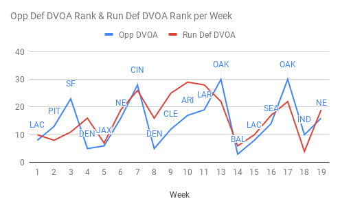

Week 01: Proposal Hand In & Project Diary Website
In preparation for week one’s proposal document deadline, most of my time was spent finalising the report as well as the setup for this project diary site. In the report I carried out some research on the attitudes towards sports analytics in the NFL, and why some coaches seem to disagree with the methods presented by advanced statistics. I also begun to chart statistics relevant to Kareem Hunt & the Chiefs to give some insight into how player evaluation may be carried out using analytics.
We're on to Week 02
Looking ahead to week two I plan to spend most of the work week experimenting with R’s data science & NFL related packages. R has extensive data representation capabilities, which is a feature I will use often while developing BoxCount. My first aim is to establish a series of various charts and graph templates where I can substitute data to test certain scenarios. Such as, the percentage of successful drives when a series begins Run, Run Pass?